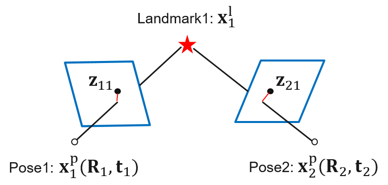

はじめに
こんにちは、エンジニアの高木です。
私は現在、adaskitという社内の自動運転関連のオープンソースプロジェクトに携わっており、プロジェクトのこれまでの成果としてlibSGMやsegmentation-sgm、「Visual OdometryをCUDAで高速化した話」等を紹介しました。
今回はVisual SLAM等で用いられるバンドル調整について、CUDAによる高速化に取り組んだ話を紹介します。結果だけ先に言うと、CPUで約12秒かかる規模のバンドル調整に対し、GPUで約1.2秒まで短縮することができました。
また、そのソースコードをGithubに公開しましたので、興味があれば是非覗いてみてください。
fixstars/cuda-bundle-adjustment
背景
バンドル調整(Bundle Adjustment)とは、画像からの3次元復元において3次元点群とカメラ姿勢を改善する手法で、点群を画像上に再投影したときに、観測データに最も当てはまるような3次元点群とカメラ姿勢を推定する問題です。

Visual SLAMの代表的手法であるORB-SLAM2では、ループ閉じ込みが行われたタイミングで、これまでに復元した全ての3次元点群と、全てのキーフレームの姿勢を改善するためにバンドル調整が用いられます。このバンドル調整は、論文中ではMotion Only BAやLocal BAと区別し、Full BAと呼ばれます。
Full BAは扱う問題の規模が大きく、大きな処理時間がかかることがあります。例えば、KITTIデータセットのsequences/00という比較的長いシーケンスでは、最後のループ閉じ込み後に行うFull BAで、約12秒の処理時間がかかることが分かりました。
この結果に対する「CUDAで実装したらどの程度速くなるのか」という興味・疑問が、このプロジェクトを始めたきっかけになります。うまく高速化できれば、最適化開始から点群と姿勢を更新するまでの遅延を短縮したり、CPUのリソースを軽減するといったメリットがあります。
バンドル調整のアルゴリズム
問題の定式化
番目のカメラの姿勢を、番目の3次元点の座標をとし、これらを並べたものをとします。がバンドル調整における未知数となります。の次元は、カメラ数を、3次元点数をとしてです。
番目のカメラで撮影した画像中の、番目の3次元点に対応する特徴点を観測と呼びで表します。また、番目のカメラに番目の3次元点を再投影した点と、との誤差を再投影誤差と呼び、で表します。
バンドル調整は再投影誤差の二乗和を目的関数とし、を最小化するを求める問題として定式化されます。
は重み行列で、観測の不確かさ(分散)から計算されます。
非線形最小二乗法
バンドル調整の問題は非線形最小二乗問題に分類され、解法としてGauss-Newton法やLevenberg-Marquardt 法が良く利用されます。Gauss-Newton法のアルゴリズムは以下の通りです。
- 解を初期化
- 終了条件を満たすまで以下を繰り返し
- 現在のにおける再投影誤差、ヤコビアンを求める
- を計算
- 線形方程式を解く
- 解の更新：
線形方程式においてとしたものがLevenberg-Marquardt法(LM法)です。は更新量の大きさを調節するパラメータで、dumping factorと呼ばれます。
係数行列の構造
線形方程式において、のサイズはと、カメラ数と点群数に応じて大きくなります。冒頭で紹介した12秒かかるケースでは、が約40万と大規模になり、直接解くことが厳しくなってきます。
そこでバンドル調整ではの構造を利用して、方程式をより小規模な問題に分割して解きます。は以下の区分行列の形で表現することができます。
はそれぞれブロック疎行列(特定のブロック以外は)という特徴があります。特に、は対角ブロック以外がの、ブロック対角行列です。
さて、という形の区分行列に対して、シューア補行列(Schur complement)という行列が定義され、のに対するシューア補行列は以下のように定義されます。
記載は省略しますが、シューア補行列を用いての逆行列を表現することができ、を整理すると、に関する2つの方程式を得ます。
上記より、まずを解いてが求められ、次にを用いてを解いてが求められます。式中のは、がブロック対角行列であるため、計算が容易という性質があります。を解く際もを直接利用できます。
実質的に解く必要がある線形方程式はのみになり、問題の規模もに縮小されます。は正定値対称行列という性質があり、コレスキー分解を用いてと分解することで線形方程式を解くことができます。
CUDA化の内容
リファレンス実装
CUDA化にあたり、ORB-SLAM2で使用されているグラフ最適化ライブラリg2oをリファレンス実装としました。g2oの内、バンドル調整で行われる処理の抽出、各処理のCUDA化の検討・実装を行いました。
結論から言うと、ほとんどの処理は並列化と相性が良く、CUDA化によって高速化効果が得られました。もともとの実装規模が大きく、全ての処理をCUDA化するのには手間がかかりましたが…
再投影誤差と係数行列の計算
現在の解における再投影誤差を計算し、続いてヤコビアン、係数行列を計算します。これらの計算量は与えられたの組み合わせ、すなわち観測の数に比例します。個々の要素は累積計算を除いて独立に計算できるため、並列化による高速化効果が期待できます。
シューア補行列の計算
を求めるにあたり、まずとを計算します。ここではブロック疎行列の演算がメインになります。計算に現れる各行列の非ゼロブロックは特殊なパターンをもち、かつ反復中に変化しないため、これに特化したCUDA実装を行っています。
はがブロック対角行列のため、計算が容易です。各ブロックでの逆行列を計算します。次にを計算します。疎行列同士の積ですが、片方()がブロック対角行列のため、実装がシンプルで済みます。
続いてを用いてとを計算します。前者は疎行列ベクトル積で、比較的実装が容易です。後者は疎行列同士の積で、リファレンス実装を素直にCUDA化するとスレッド毎に処理負荷がばらつき、難しい個所でした。ここでは、行列積で発生するブロック同士の乗算を単位として並列化し、スレッド数を稼ぎつつ処理負荷を均等化する工夫をしました。
線形方程式の求解
解の更新
最後に、を用いて解を更新します。これも各カメラ姿勢と各3次元点毎に並列化できます。
高速化結果
ORB-SLAM2とKITTIデータセットで取得したカメラ姿勢と3次元点群を入力として、処理時間をリファレンス実装のg2oと比較しました。計測プログラムと入力データは公開したソースコードに同封しているため、再現可能です。
高速化結果は以下の通りです。CPUで約12秒程度の処理をGPUで約1.2秒まで短縮できました。
計測環境
処理時間
処理時間内訳
GPUで1.2[sec]のケースにおける処理時間内訳は以下の通りで、処理時間のほとんどはコレスキー分解でした。さらなる高速化を目指す場合は、現状cuSOLVERに頼っているコレスキー分解を何とかする必要がありそうです。
ソースコードの公開
冒頭で紹介した通り、今回のソースコードはcuda-bundle-adjustmentという名前でGithubに公開しました。ORB-SLAM2内で使用する方法も紹介していますので、興味がある方は是非使ってみてください。
fixstars/cuda-bundle-adjustment
g2oに比べると現状の機能は限定的ですが、今後需要があれば機能追加や応用範囲を広げていきたいと思います。
おわりに
CUDAによるバンドル調整の高速化についてご紹介させていただきました。全ての処理をCUDA化し、納得できる処理時間にするまでには結構な試行錯誤を重ねましたが、こうして一定の高速化効果が得られ、ソースコード公開まで至ることができ嬉しく思います。
最後に、g2oの調査や高速化にご協力いただいた、昨年アルバイトの風見亮佑さんの多大な貢献に感謝いたします。